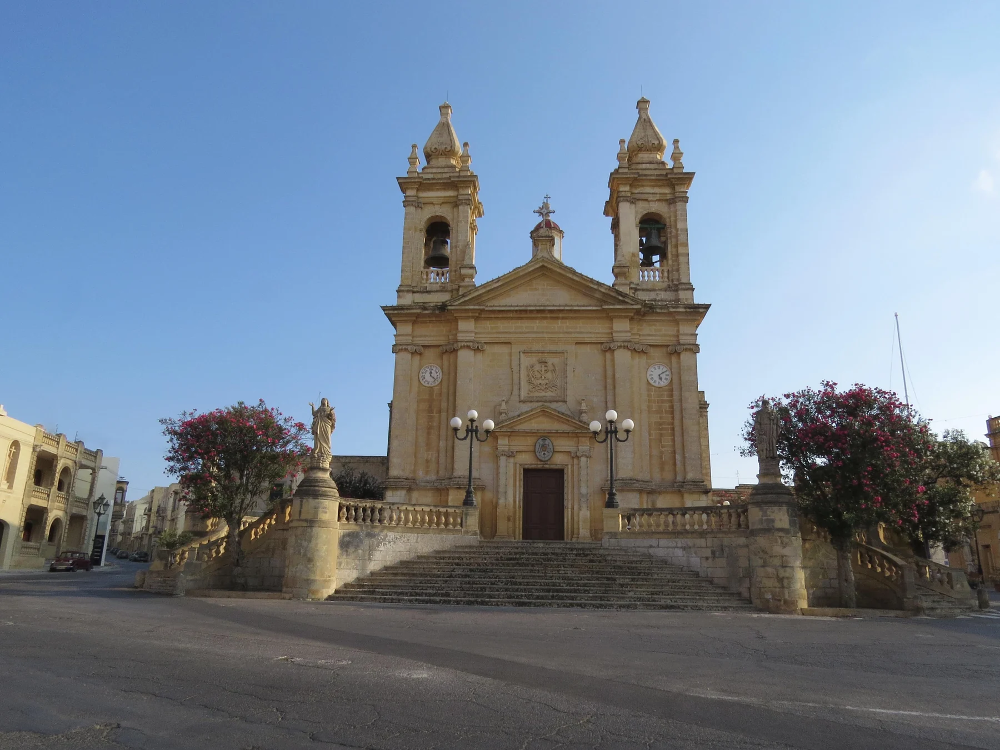

Useful for understanding the civic centre. It does not prove that a listing is in the square or within a comfortable walk.

TA' SANNAT · GOZOVillage square.
Village square.
Southern plateau.
Ta' Sannat's village core, Ta' Ċenċ plateau and cliffs, valleys and Mġarr ix-Xini are different settings. An exact address still decides gradient, access, daily convenience and whether any view exists at all.
READ THE LOCALITY IN PARTS
A southern Gozo base with distinct edges.
The parish church and village square establish the civic centre. Ta' Ċenċ belongs in a separate plateau, archaeology and cliff context; Ħanżira valley and Mġarr ix-Xini are wider landscape destinations rather than amenities attached to every Ta' Sannat home.
Landscape and prehistoric remains belong here. Never turn a locality label into a promised outlook or unrestricted access.
Treat the valley and inlet as destinations. Check live access; do not invent a shortcut, walking time or direct route.
A corridor is a fact. Timings are live.
Malta Public Transport currently publishes Route 305 on a Victoria–Ta' Sannat–Victoria corridor. Use the operator page for current stops, diversions and departures.
The street matters more than the label.
Confirm gradient, pavement continuity, evening noise, parking arrangement, entrance access, nearest useful stop and the actual route to daily errands. A Sannat label or locality centroid cannot answer those questions.
EVERYDAY ORIENTATION
Start with durable public anchors.
The council, live transport page and public health directory provide a responsible first check. Shop availability and individual operators need street-level verification.
Ta' Sannat Local Council
Use the official council site for current notices and local administration rather than freezing service details into a brochure.
Live Gozo directory
The current Primary HealthCare directory does not list Sannat among the operating Gozo community clinics. Recheck the live directory and Victoria Health Centre before relying on a service.
Route 305
This establishes a service corridor only. It does not guarantee a frequency, connection, nearest stop or property-specific journey time.
Verify the exact street
No durable grocery anchor was established in this research pass. Check current shops and the actual walking environment from the property.
FOOD, WITHOUT RANKINGS
A register is a starting point, not a recommendation.
The Malta Tourism Authority's current Sannat filter returned five licensed restaurant records when checked on 23 October 2026. Licensing does not establish quality, cuisine, price or today's opening hours.
Check the operator directly
Confirm that the venue is trading, the location is current and the service suits the occasion. This edition deliberately avoids “best” lists and review-score claims.
Ask what daily life actually needs
Food options near the square do not prove a comfortable route from every Sannat address, especially where gradient or pavement conditions matter.
Continue with the right Gozo context.
Compare Ta' Sannat with the separate Ir-Rabat (Victoria) edition, Ix-Xagħra edition and Il-Qala edition. Their locality names, services and maps remain distinct.
Open the locality overview only when you need it.
The map frames Ta' Sannat and surrounding place labels for orientation. It deliberately draws no boundary, route, distance, travel time or listing location and loads from OpenStreetMap only after your click.
Ta' Sannat Local Council · Visit Gozo: Ta' Sannat · Cultural Heritage Directorate: Sannat · MPT Route 305 · Primary HealthCare clinics · MTA restaurant register. Volatile service details require a fresh check.